11email: Barbara.Mazzilli-Ciraulo@observatoiredeparis.psl.eu 22institutetext: New York University Abu Dhabi, Saadiyat Island, PO Box 129188, Abu Dhabi, UAE 33institutetext: Center for Astro, Particle, and Planetary Physics, NYU Abu Dhabi, PO Box 129188, Abu Dhabi, UAE 44institutetext: Sternberg Astronomical Institute, M.V. Lomonosov Moscow State University, 13 Universitetsky prospect, Moscow, 119991, Russia 55institutetext: Coll ège de France, 11 Place Marcelin Berthelot, 75005 Paris, France 66institutetext: Center for Cosmology and Particle Physics, New York University, 726 Broadway, New York, NY 10003, US
مجرتان متفاعلتان تختبئان كواحدة، كشف عنها MaNGA
ونظرًا لدورها البارز في تطور المجرات، فمن الأهمية بمكان الكشف عن تفاعلات المجرات وأحداث الاندماج والتحقيق في الآليات الأساسية. إن استخدام البيانات عالية الدقة يجعل من السهل تحديد الأنظمة المدمجة، ولكن لا يزال من الممكن أن يكون الأمر صعبًا عندما لا يُظهر الشكل أي زوج مجرات واضح أو جسر غازي. يمكن أن يساعد تحديد أصل الميزات الحركية المحيرة في الكشف عن الأنظمة المعقدة. يقع هذان الجرمان المتعاكسا الدوران على التسلسل الرئيسي لتشكل النجوم، لكنهما يُظهران تشتتات مضطربة في السرعة النجمية. وتُظهر المجرة الرئيسية تشكلًا نجميًا خارج المركز، فضلًا عن مناطق عالية المعدنية خارج المركز، مما يدعم سيناريو انفجارات نجمية حديثة، بينما تستضيف المجرة الثانوية انفجارًا نجميًا مركزيًا يتزامن مع انبعاث راديوي ممتد يفوق المتوقع من تشكل النجوم. تتفق تقديرات الكتلة النجمية وكذلك الكتلة الديناميكية على نسبة الكتلة ضمن نصف القطر المرئي لـ 9:1 لهذه المجرات المتفاعلة. نقترح أننا نلاحظ مرحلة ما قبل الاندماج. قامت المجرة الأولية بتراكم الغاز عبر مرور حضيضي أول سابق قبل نحو 1 Gyr، ومؤخرًا من المجرة الثانوية الغنية بالغاز، والتي تُظهر نواة مجرة نشطة. توضح نتائجنا كيف يمكن لمجرة أن تخفي أخرى، وأهمية النهج متعدد المكونات لدراسة الأنظمة الغامضة. نتوقع أن تكون طريقتنا فعالة في الكشف عن الآليات التي تحدث في عينة فرعية من المجرات التي رصدها مسح رسم خرائط المجرات القريبة في مرصد أباتشي بوينت (MaNGA)، والتي تظهر جميعها سمات حركية ذات أصل محير في خطوط انبعاث الغاز الخاصة بها.
Key Words.:
المجرة: التطور – المجرة: الحركية والديناميكية– المجرات: التفاعلات – التقنيات: التحليل الطيفي – الطرق: تحليل البيانات1 مقدمة
أصبحت أهمية تفاعلات المجرات وأحداث الاندماج في الوقت الحاضر أمرًا لا جدال فيه، حيث تم اعتماد تطور المجرات الهرمي على نطاق واسع وتم تنفيذ العديد من الأعمال الرصدية والنظرية للتحقيق في الآليات المختلفة المتعلقة بتطور المجرات المتفاعلة (مثلًا van Dokkum et al. 2015; Cappellari 2016). لقد أتاح التحسن في دقة البيانات تسليط الضوء على التوقيعات الرصدية المختلفة لعمليات الاندماج، مثل تغير اللون (Alonso et al. 2012)، والاضطراب المورفولوجي (Ellison et al. 2010; Casteels et al. 2013)، وتعزيز تشكل النجوم (Patton et al. 2013)، والنشاط النووي الناجم عن الاندماج عند انزياح أحمر منخفض للنواة المجرية النشطة البصرية والمتوسطة الأشعة تحت الحمراء (AGN؛ Ellison et al. 2019). يعد وجود النوى المزدوجة (كما في NGC 3526؛ Sakamoto et al. 2014) علامة واضحة على عمليات الاندماج مثل وجود ذيول المد والجزر (Mesa et al. 2014)، وبدلاً من ذلك، تم أيضًا تفسير السمات الطيفية، مثل الملامح ذات الذروة المزدوجة في خطوط انبعاث الغاز الجزيئي، على أنها توقيعات اندماج (مثلًا Greve et al. 2005; Weiß et al. 2005). في حين تتم مراقبة الجداول الزمنية للدمج بشكل جيد إحصائيًا من خلال عمليات المحاكاة العددية (مثلًا Somerville and Davé 2015; Nevin et al. 2019) وللكائنات الفردية (مثلًا Lahén et al. 2018)، فإن تأريخ عصور هذه العمليات المرصودة لا يزال يمثل تحديًا. أخيرًا، تظل بعض الأسئلة المهمة دون إجابة فيما يتعلق بالتأثير المحتمل لـ AGNs على مرحلة الدمج (مثلًا Alonso et al. 2007; McAlpine et al. 2020; Shah et al. 2020; Sharma et al. 2021) وما إذا كان إخماد تشكل النجوم مرتبطًا بالاندماج (مثلًا Ellison et al. 2018; Hani et al. 2020; Das et al. 2021).
| r.a. | dec. | redshift | morphology | inclination | SFRSED | SFR | |
| (J2000) | (J2000) | (∘) | () | () | () | ||
| 22h10m24.5s | +11d42m47s | 0.09228 | interacting | 44 | 13.3 | 10.6 |
ملاحظات: الإحداثيات والتحول نحو الأحمر تأتي من كتالوج NASA-Sloan Atlas، بينما يتم تحديد الشكل عن طريق الفحص البصري (تم تصنيف هذا الكائن على أنه غير مؤكد في Galaxy Zoo). يتم اشتقاق الميل باستخدام القياسات من Domínguez Sánchez et al. (2018). يتم اشتقاق قيمتا الكتلة النجمية ومعدل تشكل النجوم (SFR) من تركيب SED بناءً على الأطياف البصرية والأشعة فوق البنفسجية (Salim et al. 2016). يقدم العمود الأخير تقدير SFR الموضح في Brinchmann et al. (2004).
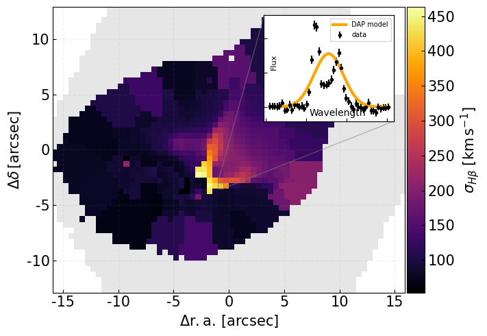
 المشتق من MaNGA DAP. يتم تمثيل مجال الرؤية MaNGA كبصمة رمادية. تُظهر اللوحة المضمنة جزءًا من الطيف المتواصل المطروح من سباكسل واحد حيث لا يتمكن النموذج (باللون الأخضر) من ملاءمة الميزات الطيفية.
المشتق من MaNGA DAP. يتم تمثيل مجال الرؤية MaNGA كبصمة رمادية. تُظهر اللوحة المضمنة جزءًا من الطيف المتواصل المطروح من سباكسل واحد حيث لا يتمكن النموذج (باللون الأخضر) من ملاءمة الميزات الطيفية.نقدم في هذه المقالة تحليلًا متعدد الأطوال الموجية لاندماج المجرة (J221024.49+114247.0) في  ، والذي تم تحديده من خلال اكتشاف ملفات تعريف خط الانبعاث المزدوج الذروة في الطيف المركزي لمسح السماء الرقمي (SDSS؛ Strauss et al. 2002). تم تحديد وتحليل اثنين من مكونات الغاز والنجم المعاكسة للدوران. في القسم 2 نناقش كيفية استخراج الخصائص من مكعب بيانات مسح رسم خرائط المجرات القريبة في مرصد أباتشي بوينت (MaNGA؛ Bundy et al. 2015) لتحديد المكونين. في القسم 3 نناقش بيانات الغاز الجزيئي، بالإضافة إلى الأرشيفات الأخرى (مصفوفة كبيرة جدًا) والخصائص المستخدمة من كتالوجات القيمة المضافة. في القسم 4 نقوم بتحليل خصائص هذا الاندماج. في القسم 5 نناقش نتائجنا.
نعتمد خلال هذا العمل علم الكونيات
، والذي تم تحديده من خلال اكتشاف ملفات تعريف خط الانبعاث المزدوج الذروة في الطيف المركزي لمسح السماء الرقمي (SDSS؛ Strauss et al. 2002). تم تحديد وتحليل اثنين من مكونات الغاز والنجم المعاكسة للدوران. في القسم 2 نناقش كيفية استخراج الخصائص من مكعب بيانات مسح رسم خرائط المجرات القريبة في مرصد أباتشي بوينت (MaNGA؛ Bundy et al. 2015) لتحديد المكونين. في القسم 3 نناقش بيانات الغاز الجزيئي، بالإضافة إلى الأرشيفات الأخرى (مصفوفة كبيرة جدًا) والخصائص المستخدمة من كتالوجات القيمة المضافة. في القسم 4 نقوم بتحليل خصائص هذا الاندماج. في القسم 5 نناقش نتائجنا.
نعتمد خلال هذا العمل علم الكونيات  للمادة المظلمة الباردة (CDM) مع المعلمات = 0.7، = 0.3، و.
للمادة المظلمة الباردة (CDM) مع المعلمات = 0.7، = 0.3، و.
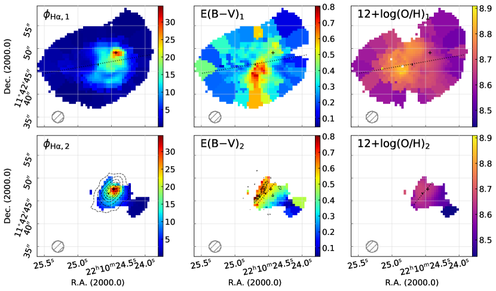
 (في لكل سباكسل)، ويعرض العمود الثاني الانقراض المحسوب من تناقص بالمر، ويظهر العمود الأخير وفرة مرحلة غاز الأكسجين المشتقة باستخدام معايرة O3N2.
تشير الصلبان السوداء إلى موضع ذروة التدفق
(في لكل سباكسل)، ويعرض العمود الثاني الانقراض المحسوب من تناقص بالمر، ويظهر العمود الأخير وفرة مرحلة غاز الأكسجين المشتقة باستخدام معايرة O3N2.
تشير الصلبان السوداء إلى موضع ذروة التدفق  المصححة للانقراض للمكون الممثل. يتم عرض MaNGA PSF كدائرة رمادية مظللة في الزاوية السفلية اليسرى من اللوحات.
المصححة للانقراض للمكون الممثل. يتم عرض MaNGA PSF كدائرة رمادية مظللة في الزاوية السفلية اليسرى من اللوحات.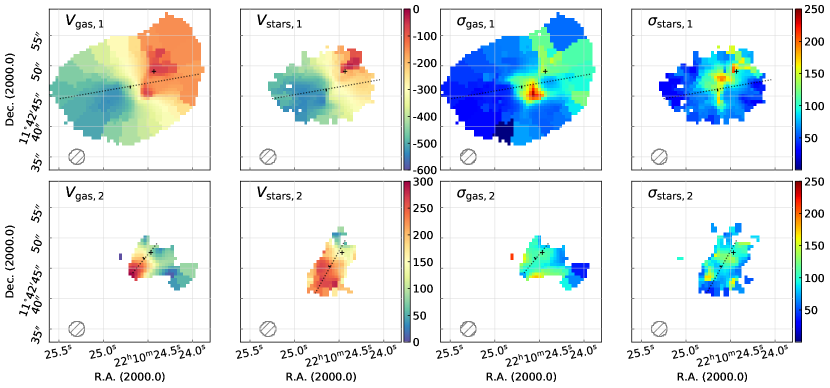
 المصححة للانقراض للمكون الممثل.
المصححة للانقراض للمكون الممثل.2 تحليل بيانات MaNGA
المجرة J221024.49+114247.0 هي عبارة عن عملية اندماج بصري تم تحديدها في عينة فرعية (Mazzilli Ciraulo et al، في الإعدادية) تم الحصول عليها عن طريق مطابقة ملف التلخيص من خط أنابيب تخفيض البيانات MaNGA (DRP؛ إصدار بيانات SDSS DR14, Abolfathi et al. 2018) وكتالوج المجرات المزدوج الذروة الذي تم إنتاجه بواسطة Maschmann et al. (2020)، بالاعتماد على الكتالوج المرجعي لتوزيعات الطاقة الطيفية (RCSED) من Chilingarian et al. (2017). الخصائص الأساسية لهذا المصدر، التي توفرها كتالوجات القيمة المضافة المختلفة، موضحة في الجدول 1. يكشف مسح Legacy (Dey et al. 2019) عن كائن معطل، ويظهر الطيف المتكامل داخل ألياف 3 arcsec SDSS خطوط انبعاث مزدوجة الذروة. تدور وظيفة انتشار النقطة الفعالة (PSF) للبيانات حول 2.5 arcsec وتتوافق مع الدقة المكانية لـ 4.3 kpc عند الانزياح الأحمر للمصدر ()، ويتم ربط البيانات على شبكة سباكسلات .
لقد أنتجنا خرائط 2D استنادًا إلى الخصائص المشتقة من خط أنابيب تحليل البيانات MaNGA (DAP؛ SDSS-IV، Westfall et al. 2019). تصل خطوط الانبعاث الرئيسية إلى ذروتها في منطقة مركزية مدمجة. لا يعرض حقل السرعة أي حركة دورانية قياسية ويبدو أنه غير منتظم إلى حد كبير، مع قيم تغطي نطاقًا واسعًا جدًا (). كما هو موضح في الشكل 1، فإن تشتت السرعة ملحوظ أيضًا، حيث تظهر السباكسلات قيمًا أكبر من وليست متمركزة. لم يتم تركيب ميزات الذروة المزدوجة لهذه السباكسلات بشكل جيد من خلال ملاءمة المكون الفردي، ويتم إخفاء بعضها أثناء معالجة البيانات. من أجل مواصلة التحقيق في هذا النظام المعقد، قمنا بتطوير تحليل متعدد المكونات الأمثل.
2.1 حركيات الغاز المستمدة من النهج متعدد المكونات
لقد قمنا بتطوير إجراء مناسب، حيث قمنا بضبط مكونين لخطوط الانبعاث المحددة. قمنا بتشغيله وتطبيقه على أطياف Voronoi المطروحة من الاستمرارية وخطوط  و [OIII] المزدوجة و
و [OIII] المزدوجة و وخطوط مزدوجة [NII]. كما هو الحال في MaNGA DAP، قمنا بتعيين نفس السرعة وتشتت السرعة لجميع هذه الخطوط.
تمكنا من تسليط الضوء على وجود مكونين على طول خط البصر.
لقد اخترنا أولاً سباكسلات موثوقة، بالاعتماد على عتبة نسبة الإشارة إلى الضوضاء (S/N) البالغة 3. عندما لا يتم استيفاء معيار S/N بواسطة المكونين المجهزين، احتفظنا بالنتائج الغوسية المفردة وربطناها بالمجرة الرئيسية.
بالنسبة للمكون الثانوي، استندنا في اختيارنا لـ spaxel على اختبار F-(Mendenhall and Sincich 2011) للتأكد من أن التوافق الغوسي المزدوج كان أفضل من التوافق الغوسي الفردي، وأن فرق السرعة بين كلا القمتين كان أكبر بكثير من الدقة الطيفية لبيانات MaNGA، وأن هناك نسبة اتساع بين القمتين لضمان عدم قمع إحداهما تمامًا.
وخطوط مزدوجة [NII]. كما هو الحال في MaNGA DAP، قمنا بتعيين نفس السرعة وتشتت السرعة لجميع هذه الخطوط.
تمكنا من تسليط الضوء على وجود مكونين على طول خط البصر.
لقد اخترنا أولاً سباكسلات موثوقة، بالاعتماد على عتبة نسبة الإشارة إلى الضوضاء (S/N) البالغة 3. عندما لا يتم استيفاء معيار S/N بواسطة المكونين المجهزين، احتفظنا بالنتائج الغوسية المفردة وربطناها بالمجرة الرئيسية.
بالنسبة للمكون الثانوي، استندنا في اختيارنا لـ spaxel على اختبار F-(Mendenhall and Sincich 2011) للتأكد من أن التوافق الغوسي المزدوج كان أفضل من التوافق الغوسي الفردي، وأن فرق السرعة بين كلا القمتين كان أكبر بكثير من الدقة الطيفية لبيانات MaNGA، وأن هناك نسبة اتساع بين القمتين لضمان عدم قمع إحداهما تمامًا.
نعرض الخصائص المشتقة لكل منها على خرائط 2D الموضحة في الشكلين 3 و3. يعرض الشكل 3 تدفقات خط  المصححة للانقراض، والانقراض المشتق من تناقص بالمر، ومعدنية الغاز باستخدام معايرة O3N2، بينما يعرض الشكل 3 حركيات الغاز للمكونين معهما السرعة وتشتت السرعة.
تؤكد الخرائط التي تم حلها مكانيًا مساهمة مكونين منفصلين: الأول مرتبط بمجرة ذات مجال سرعة منتظم إلى حد ما، في حين تم اكتشاف الثاني في منطقة أصغر من مجال الرؤية، ويظهر تدفق خط
المصححة للانقراض، والانقراض المشتق من تناقص بالمر، ومعدنية الغاز باستخدام معايرة O3N2، بينما يعرض الشكل 3 حركيات الغاز للمكونين معهما السرعة وتشتت السرعة.
تؤكد الخرائط التي تم حلها مكانيًا مساهمة مكونين منفصلين: الأول مرتبط بمجرة ذات مجال سرعة منتظم إلى حد ما، في حين تم اكتشاف الثاني في منطقة أصغر من مجال الرؤية، ويظهر تدفق خط  أقوى قليلاً، ويظهر مجال سرعة معاكس للدوران فيما يتعلق بالجسم الرئيسي.
أقوى قليلاً، ويظهر مجال سرعة معاكس للدوران فيما يتعلق بالجسم الرئيسي.
2.2 تحليل متعدد المكونات لحركيات النجوم
لاستكشاف ما إذا كان الهيكل ذو الذروة المزدوجة في خطوط الانبعاث له نظائر مرتبطة في الحركية النجمية، قمنا بتطبيق سير عمل تحليلي يستخدم لدراسة المجرات التي تستضيف الأقراص النجمية المعاكسة الدوران (Katkov et al. 2013, 2016). أولاً، قمنا بتركيب الأطياف باستخدام تقنية التركيب الطيفي الكامل، NBursts (Chilingarian et al. 2007b, a)، في الوضع الأساسي، حيث يتم تقريب الطيف من خلال نموذج سكاني نجمي بسيط واحد (SSP). ثانيًا، استعدنا توزيع سرعة خط البصر النجمي غير البارامتري (LOSVD) باستخدام قالب نموذج سكاني نجمي غير موسع من الخطوة الأولى (انظر تفاصيل الطريقة في Kasparova et al. 2020). يكشف النجم LOSVD النجمي غير البارامتري عن بنية مزدوجة الذروة منفصلة بشكل واضح، حيث قمنا بتعديل وظيفة غاوسية مزدوجة لاشتقاق المعلمات الحركية للمكونات الفردية. ومن هنا نسلط الضوء على مكونين سكانيين نجميين: أحدهما منتظم، والثاني أقل بروزاً ولكنه يرصد في المنطقة التي نرى فيها مكوناً غازياً ثانياً أيضاً. استخدمنا مرشحات الجودة بناءً على أوجه عدم اليقين في المعلمات والتدفق النسبي الكافي للمكون الثاني لإظهار خرائط 2D ذات الصلة.
يعرض العمودان الثاني والرابع في الشكل 3 السرعة النجمية ومجالات تشتت السرعة النجمية، على التوالي، لكل مكون. أخيرًا، قمنا بإعادة تركيب الأطياف باستخدام NBursts، باستخدام نهج مكون من مكونين يكون فيه كلا المكونين لهما حركيات فردية ومستقلة. لقد اعتبرنا تقديرات السرعة والتشتت من الخطوة السابقة بمثابة تخمينات أولية. يشير هذا التحليل إلى أن كلا المكونين لهما متوسط أعمار نجمية متشابهة ولكن مختلفة قليلاً (مكافئ SSP) لـ و ومعدنية لـ و.
3 تحليل البيانات الأخرى
3.1 محتوى الغاز الجزيئي
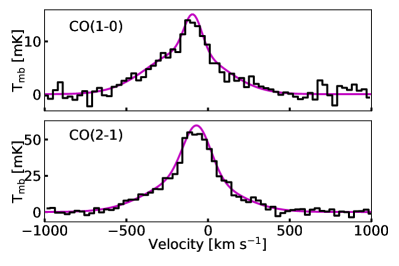
تم إجراء عمليات رصد التلسكوب IRAM 30m في ديسمبر 2019 باستخدام جهاز الاستقبال Eight MIxer (EMIR) ووضع التبديل المتذبذب المتماثل، حيث تتحول المرآة الثانوية إلى حد أقصى  120 قوس ثانية في السمت. لقد عملنا في وضع النطاق الجانبي المزدوج، وتم توصيل هذه النطاقات الجانبية بنهايتين خلفيتين طيفيتين، WILMA وFTS.
تم دمج J221024.49+114247.0 لساعات 2.0 في النطاق E090 ولساعات 2.8 في النطاق E230، مما أتاح كشف انبعاث CO(1-0) في النطاق الأول وانبعاث CO(2-1) في النطاق الثاني، كما هو موضح في الشكل 4.
قمنا بملاءمة خطوط أساس خطية وطرحناها من الأطياف. تُظهر الخطوط أجنحة واسعة وتتلاءم على نحو أفضل بدالتين غاوسيتين بعرضين مختلفين (انظر الشكل 4 والمعلمات في الجدول 2) مقارنةً بملاءمة دالة غاوسية واحدة. أولًا، حسبنا لمعان خط CO، في ، كما هو معرّف في Solomon et al. (1997):
120 قوس ثانية في السمت. لقد عملنا في وضع النطاق الجانبي المزدوج، وتم توصيل هذه النطاقات الجانبية بنهايتين خلفيتين طيفيتين، WILMA وFTS.
تم دمج J221024.49+114247.0 لساعات 2.0 في النطاق E090 ولساعات 2.8 في النطاق E230، مما أتاح كشف انبعاث CO(1-0) في النطاق الأول وانبعاث CO(2-1) في النطاق الثاني، كما هو موضح في الشكل 4.
قمنا بملاءمة خطوط أساس خطية وطرحناها من الأطياف. تُظهر الخطوط أجنحة واسعة وتتلاءم على نحو أفضل بدالتين غاوسيتين بعرضين مختلفين (انظر الشكل 4 والمعلمات في الجدول 2) مقارنةً بملاءمة دالة غاوسية واحدة. أولًا، حسبنا لمعان خط CO، في ، كما هو معرّف في Solomon et al. (1997):
| (1) |
حيث هو التدفق المتكامل بـ Jy km s-1، و هو مساحة الخط الواردة في الجدول 2 بـ K km s-1 (وقد أخذنا مجموع كل من من أجل تكامل كامل التدفق)، و هو تردد الخط بالجيجاهرتز، و هي مسافة اللمعان إلى المجرة. ثانيًا، اشتققنا كتلة الغاز الجزيئي باستخدام ، حيث
هو مساحة الخط الواردة في الجدول 2 بـ K km s-1 (وقد أخذنا مجموع كل من من أجل تكامل كامل التدفق)، و هو تردد الخط بالجيجاهرتز، و هي مسافة اللمعان إلى المجرة. ثانيًا، اشتققنا كتلة الغاز الجزيئي باستخدام ، حيث  هو عامل تحويل CO إلى H2، المقدّر وفق Freundlich et al. (2019).
ومن ثم اشتقنا عامل تحويل CO إلى H2 لـ ووجدنا أخيرًا كتلة غاز جزيئية إجمالية قدرها ، والتي تتوافق مع من إجمالي الكتلة النجمية.
يعطي الجدول 2 خصائص أطياف CO المختزلة.
هو عامل تحويل CO إلى H2، المقدّر وفق Freundlich et al. (2019).
ومن ثم اشتقنا عامل تحويل CO إلى H2 لـ ووجدنا أخيرًا كتلة غاز جزيئية إجمالية قدرها ، والتي تتوافق مع من إجمالي الكتلة النجمية.
يعطي الجدول 2 خصائص أطياف CO المختزلة.
| FWHMv | |||||
|---|---|---|---|---|---|
| (km s-1) | (mK) | (mK) | (km s-1) | (K km s-1) | |
| CO(1-0) | -13914 | 8 | 0.7 | 537 | 4.460.29 |
| -928 | 7 | 0.7 | 127 | 0.890.24 | |
| CO(2-1) | -1029 | 23 | 1.5 | 571 | 13.830.75 |
| -693 | 34 | 1.5 | 196 | 7.010.72 |
3.2 بنى خافتة مكتشفة في صورة MegaPipe/CFHT بنطاق 
استخدمنا أيضًا الصورة المكدسة ذات النطاق  المتاحة للجمهور من MegaCam، وهو جهاز تصوير واسع المجال تم تركيبه على تلسكوب كندا-فرنسا-هاواي (CFHT)، مع معايرة فلكية وضوئية دقيقة جدًا، دقيقة على التوالي ضمن 0.15 ′′ و 0.03 ماج.
من خلال تنعيم الصورة من خط تكديس الصور MegaCam (MegaPipe؛ Gwyn 2008) باستخدام نواة غاوسية ثم طرح النتيجة من الصورة الأصلية، فإننا نسلط الضوء على وجود ممر غبار محجوب عبر المجرة (انظر اللوحة اليمنى من الشكل 5) وبعض الأذرع غير المنتظمة للنجوم حول قلب النظام.
المتاحة للجمهور من MegaCam، وهو جهاز تصوير واسع المجال تم تركيبه على تلسكوب كندا-فرنسا-هاواي (CFHT)، مع معايرة فلكية وضوئية دقيقة جدًا، دقيقة على التوالي ضمن 0.15 ′′ و 0.03 ماج.
من خلال تنعيم الصورة من خط تكديس الصور MegaCam (MegaPipe؛ Gwyn 2008) باستخدام نواة غاوسية ثم طرح النتيجة من الصورة الأصلية، فإننا نسلط الضوء على وجود ممر غبار محجوب عبر المجرة (انظر اللوحة اليمنى من الشكل 5) وبعض الأذرع غير المنتظمة للنجوم حول قلب النظام.
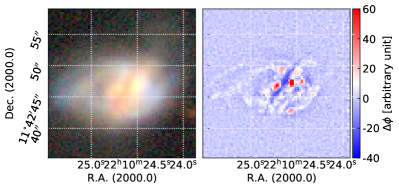
 ) من استطلاع Legacy (Dey et al. 2019). اليمين: الفرق بين صورة مرشح النطاق r MegaCam ونسخته المصقولة.
) من استطلاع Legacy (Dey et al. 2019). اليمين: الفرق بين صورة مرشح النطاق r MegaCam ونسخته المصقولة.3.3 أرشيفات استمرارية الراديو VLA
رُصد J221024.49+114247.0 بالمصفوفة الكبيرة جدًا (VLA) في 2016 سبتمبر 30 بالتشكيل A عند الترددين 1.5 GHz و2.5 GHz، اللذين يقابلان النطاقين  و، على التوالي، وبدقة للأول و للثاني (P.I.: J. D. Gelfand). وتبلغ التدفقات المقابلة 8.2 mJy و3.1 mJy، على التوالي. وبالتوازي، جمعنا التدفقات المتكاملة الآتية من بيانات أرشيفية: 7.4
و، على التوالي، وبدقة للأول و للثاني (P.I.: J. D. Gelfand). وتبلغ التدفقات المقابلة 8.2 mJy و3.1 mJy، على التوالي. وبالتوازي، جمعنا التدفقات المتكاملة الآتية من بيانات أرشيفية: 7.4 0.3 mJy عند 1.4 GHz من مسح الصور الخافتة لسماء الراديو عند عشرين سنتيمترًا (FIRST) (Becker et al. 1994; Helfand et al. 2015)، و3.1
0.3 mJy عند 1.4 GHz من مسح الصور الخافتة لسماء الراديو عند عشرين سنتيمترًا (FIRST) (Becker et al. 1994; Helfand et al. 2015)، و3.1 0.5 mJy عند 3 GHz من مسح السماء بالمصفوفة الكبيرة جدًا (VLASS؛ Lacy et al. 2020). اشتققنا دليلًا طيفيًا سنكروترونيًا مقداره -1.3 ولمعانًا عند 1.4 GHz في إطار السكون مقداره W Hz-1 (Condon et al. 2019). وكما هو مبين في اللوحة السفلية اليسرى من الشكل 3، تتطابق ذروة 1.5 GHz مع المكون الثاني
0.5 mJy عند 3 GHz من مسح السماء بالمصفوفة الكبيرة جدًا (VLASS؛ Lacy et al. 2020). اشتققنا دليلًا طيفيًا سنكروترونيًا مقداره -1.3 ولمعانًا عند 1.4 GHz في إطار السكون مقداره W Hz-1 (Condon et al. 2019). وكما هو مبين في اللوحة السفلية اليسرى من الشكل 3، تتطابق ذروة 1.5 GHz مع المكون الثاني  .
.
4 النتائج: خصائص الدمج
4.1 الكينماتيكا والهندسة
4.1.1 قرصان نجمي وغازي
نسلط الضوء على تراكب مكونين على طول خط الرؤية في بيانات MaNGA ونفسر هذه الميزات الطيفية على أنهما السلفان لحدث اندماج مستمر. يتضمن هذا التفاعل مجرة واحدة تبدو حركيات غازها منتظمة إلى حد ما، ومجرة ثانية تدور بشكل معاكس بالنسبة إلى المجرة الأولى. كما هو موضح في الشكل 3، فإن حركات السرعة النجمية لكلا المكونين متوافقة مع مجالات سرعة الغاز. زوايا الموضع () لحقول السرعة الغازية والنجمية، المحسوبة باستخدام الخوارزميات الموضحة في Krajnović et al. (2006) (انظر FIT_KINEMATIC_PA في Cappellari 2017)، متشابهة: و للمكون الأول، و و للمكون الثاني. باستخدام المحاور الموجودة لحركيات الغاز، قمنا بتقدير أطوال المحاور الرئيسية والثانوية، على التوالي، 41 kpc و27 kpc للمجرة الرئيسية، و13 kpc و9 kpc للمجرة الثانية.
4.1.2 خط الغبار
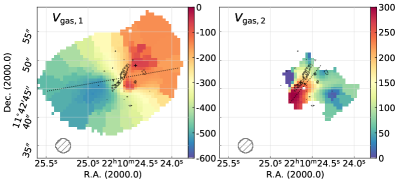
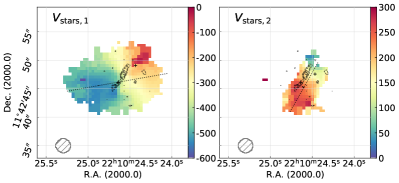
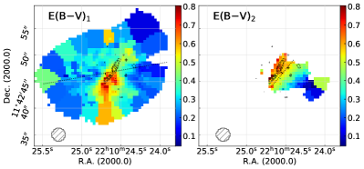
يمتد شريط الغبار المعروض في اللوحة اليمنى من الشكل 5 من الجنوب الشرقي إلى الشمال الغربي على مدى 11 kpc تقريبًا. لقد قدرنا زاوية الموضع () المتوافقة مع زاوية الموضع المستمدة من مجال السرعة للمكون الثاني MaNGA. كما هو موضح في الشكل 6، يتوافق ممر الغبار هذا مع الانقراض المحسوب بتناقص بالمر للمكون الثاني، بنفس الميل، في حين يتم اكتشافه بطريقة ما في الانقراض المقاس للمكون الأول، مما يدعم الرأي القائل بأن المكون الثاني يقع أمام النظام. عند مقارنتها بالمكون النجمي والغازي (اللوحات الوسطى والعلوية)، فإنها تظهر نفس زاوية موضع السرعات ولكنها تتحرك نحو الشمال، وبالتالي فهي متوافقة مع ميل يبلغ حوالي 50∘.
4.2 نشاط تشكل النجوم
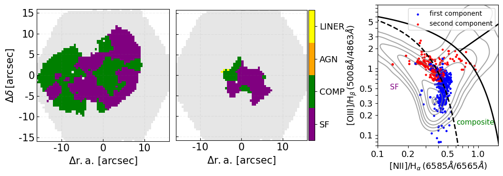
4.2.1  القائم على SFR
القائم على SFR
نحن نشتق معدل تشكل النجوم المصحح للانقراض (SFR) لكل مكون بناءً على قياسات التحلل المزدوج المكون. قمنا بتصحيح لمعان H بعد Calzetti (2001): =، حيث هو اللمعان الجوهري، هو اللمعان المرصود، هو منحنى الاحمرار عند الطول الموجي H
بعد Calzetti (2001): =، حيث هو اللمعان الجوهري، هو اللمعان المرصود، هو منحنى الاحمرار عند الطول الموجي H ، وE(B-V) هو انقراض الغبار. لحساب هذه القيمة الأخيرة، استخدمنا نسبة H
، وE(B-V) هو انقراض الغبار. لحساب هذه القيمة الأخيرة، استخدمنا نسبة H /H
/H وافترضنا قيمة جوهرية قدرها 2.86 (المقابلة لدرجة حرارة وكثافة الإلكترون لإعادة التركيب للحالة B؛ Osterbrock and Ferland 2006). تتوافق قيمنا المشتقة المستندة إلى بيانات MaNGA، SFR وSFR، مع التقديرات المختلفة لـ SFR، وبالتحديد من Brinchmann et al. (2004) ومن توزيع الطاقة الطيفية (SED) المناسب بناءً على الأشعة فوق البنفسجية والأطياف الضوئية التي يؤديها Salim et al. (2016)، والتي توافق على قيمة إجمالية أعلى من .
وافترضنا قيمة جوهرية قدرها 2.86 (المقابلة لدرجة حرارة وكثافة الإلكترون لإعادة التركيب للحالة B؛ Osterbrock and Ferland 2006). تتوافق قيمنا المشتقة المستندة إلى بيانات MaNGA، SFR وSFR، مع التقديرات المختلفة لـ SFR، وبالتحديد من Brinchmann et al. (2004) ومن توزيع الطاقة الطيفية (SED) المناسب بناءً على الأشعة فوق البنفسجية والأطياف الضوئية التي يؤديها Salim et al. (2016)، والتي توافق على قيمة إجمالية أعلى من .
4.2.2 WISE القائم على SFR
يوفر معدل SFR المستمد من بيانات مستكشف المسح بالأشعة تحت الحمراء واسع النطاق (WISE) (Salim et al. 2016). وهو يتفق بشكل ممتاز مع التقدير السابق المستند إلى H ، مما يدعم الافتراض القائل بأنه لا يوجد نقص كبير في تقدير نشاط تشكل النجوم. كما تمت مناقشته لاحقًا (الشكل 8)، تقع المجرتان في التسلسل الرئيسي لتشكل النجوم.
، مما يدعم الافتراض القائل بأنه لا يوجد نقص كبير في تقدير نشاط تشكل النجوم. كما تمت مناقشته لاحقًا (الشكل 8)، تقع المجرتان في التسلسل الرئيسي لتشكل النجوم.
4.2.3 SFR القائم على الراديو
باتباع Condon et al. (2019) وبافتراض أن التدفق الراديوي يرجع إلى تشكل النجوم فقط، فقد اشتقنا أيضًا SFR القائم على الراديو والذي يمكن أن يصل حجمه إلى . كما ذُكر في القسم 3.3، المنحدر المحسوب من كثافات التدفق الأربع (FIRST، كلا النطاقين VLA، وVLASS) شديد الانحدار. على الرغم من أن قيمة -1.3 هذه ليست كافية لتقييم ما إذا كان الانبعاث ينشأ من AGNs أو تشكل النجوم، إلا أنه نموذجي لانبعاث السنكروترون وليس انبعاثًا حرًا.
يرجع التناقض بين تقديرات SFR المستندة إلى الضوء والراديو إلى التقليل الشديد من الانقراض في التقدير البصري أو إلى منطقة خط الانبعاثات النووية منخفضة التأين AGN المخفية (LINER) التي تساهم في تدفق الراديو. ومع ذلك، فإن الاتفاق الجيد بين SFR المستند إلى H البصري وSFR المستند إلى الأشعة تحت الحمراء WISE الذي تمت مناقشته أعلاه يستبعد الفرضية الأولى.
البصري وSFR المستند إلى الأشعة تحت الحمراء WISE الذي تمت مناقشته أعلاه يستبعد الفرضية الأولى.
كما هو معروض في اللوحة السفلية اليسرى من الشكل 3، فإن الذروة عند 1.5 GHz (بالإضافة إلى الذروة عند 2.5 GHz) تتزامن مع تدفق المكون الثاني . بالنظر إلى حجم SFR الكبير الذي لوحظ في المجرة الرئيسية، فمن المتوقع أن يصل التدفق الراديوي الناتج عن تشكل النجوم إلى ذروته في هذه المجرة. حقيقة أن التدفق الراديوي يتركز على المكون الثاني هي حجة قوية لصالح AGN وتدعم فكرة أن معظم هذا التدفق الراديوي (أكثر من 90%) ليس بسبب تشكل النجوم.
4.2.4 تشكل النجوم خارج المركز
بالنسبة للمجرة الرئيسية، ذروة تشكل النجوم المكتشفة في  بعيدة عن المركز بالنسبة للمركز الحركي. يصل تشتت السرعة إلى ذروته في مركز نمط الدوران، ولكن تم اكتشاف بعض التشتت الكبير لسرعة الغاز في الجزء الشمالي الغربي من القرص. في الواقع، في حين أن السرعات النجمية تتفق بشكل جيد مع سرعات الغاز، فإن تشتت السرعة النجمية يتغير بالنسبة لتلك التي لوحظت بالنسبة للغاز.
علاوة على ذلك، لا يمكننا استبعاد أن تصحيح الانقراض لانبعاث
بعيدة عن المركز بالنسبة للمركز الحركي. يصل تشتت السرعة إلى ذروته في مركز نمط الدوران، ولكن تم اكتشاف بعض التشتت الكبير لسرعة الغاز في الجزء الشمالي الغربي من القرص. في الواقع، في حين أن السرعات النجمية تتفق بشكل جيد مع سرعات الغاز، فإن تشتت السرعة النجمية يتغير بالنسبة لتلك التي لوحظت بالنسبة للغاز.
علاوة على ذلك، لا يمكننا استبعاد أن تصحيح الانقراض لانبعاث  ليس كافيا لتتبع انبعاث الغاز المتأين الفعلي في مركز المجرة الرئيسية. وبالتالي قد نفتقد تشكل النجوم في مركزها. قد يتأثر تشتت السرعة النجمية أيضًا بكمية كبيرة من الغبار في المركز، وهو ما يفسر سبب اكتشافنا لقيم عالية في المنطقة الشمالية الغربية من المجرة حيث يوجد غبار أقل.
إن وجود الكتل والهياكل الشبيهة بالخيوط، التي لوحظت في خرائط انقراض الغبار (الشكل 3) وفي خريطة تشتت السرعة للمجرة الأولية (الشكل 3)، يشير أيضًا إلى وجود تدرجات السرعة الأساسية بسبب تراكم الغاز الأخير الناجم عن التفاعل.
ليس كافيا لتتبع انبعاث الغاز المتأين الفعلي في مركز المجرة الرئيسية. وبالتالي قد نفتقد تشكل النجوم في مركزها. قد يتأثر تشتت السرعة النجمية أيضًا بكمية كبيرة من الغبار في المركز، وهو ما يفسر سبب اكتشافنا لقيم عالية في المنطقة الشمالية الغربية من المجرة حيث يوجد غبار أقل.
إن وجود الكتل والهياكل الشبيهة بالخيوط، التي لوحظت في خرائط انقراض الغبار (الشكل 3) وفي خريطة تشتت السرعة للمجرة الأولية (الشكل 3)، يشير أيضًا إلى وجود تدرجات السرعة الأساسية بسبب تراكم الغاز الأخير الناجم عن التفاعل.
4.2.5 مجرتان على التسلسل الرئيسي
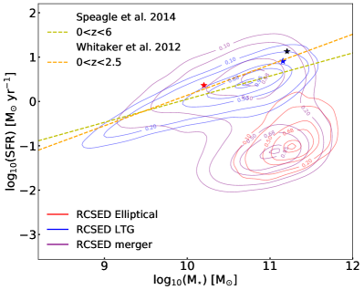
يلخص الشكل 8 الخصائص الرئيسية لتشكل النجوم في المجرتين. فلهما نشاط منتظم في تشكل النجوم إذ تقعان كلتاهما على التسلسل الرئيسي. وللمقارنة، نعرض الخطوط الكنتورية المستندة إلى مجرات مأخوذة من RCSED (Chilingarian et al. 2017). يضم هذا الفهرس 800,299 مجرة ذات انزياح أحمر منخفض ومتوسط ()، ويوفر قياسات طيفية ضوئية متعددة الأطوال الموجية من مسوح مختلفة (GALEX وSDSS وUKIDSS)، فضلًا عن بيانات ذات قيمة مضافة (تصحيحات k، وحركيات النجوم والغاز، وتقديرات الانقراض) لكل جسم. على الصعيد العالمي، لا يُظهر المكونان المكتشفان حاليًا أي زيادة في تشكل النجوم. تتوافق هذه النتيجة مع كشف الغاز الجزيئي الذي نوقش في القسم 4.5. وأخيرًا، يدعم مخطط الإثارة الذي تم استكشافه بعد ذلك أيضًا عمليات تشكل النجوم والإثارة المركبة لمعظم مناطق هاتين المجرتين.
4.3 مخطط إثارة BPT
عند النظر في مخطط Baldwin، Phillips & Telervich التشخيصي (المعرّف في Baldwin et al. 1981) لكل قمة على حدة (راجع الشكل 7)، تقع معظم السباكسلات في المناطق المركبة وتشكل النجوم لكلتا القمتين، لكن الذروة الثانية تعرض نسبة [OIII] / أعلى بشكل منهجي من الأولى. وهذا يدعم تحليلنا المكون من مكونين ويتماشى مع حقيقة أن المكون المنزاح نحو الأحمر له كتلة أصغر (ومعدنية أقل؛ مثلًا Kewley et al. 2019; Curti et al. 2020). في حين أن القرصين يتكونان في الغالب من النجوم، فإن خرائط BPT (الشكل 7) تعرض انبعاثًا محليًا للغاية من النوع LINER.
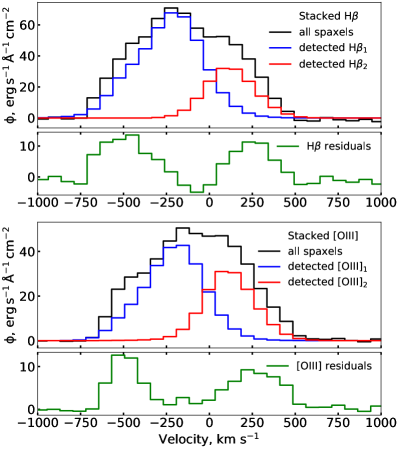
 و[OIII]
و[OIII] 5008، على التوالي، من جميع سباكسلات MaNGA باللون الأسود. نعرض باللونين الأزرق والأحمر المكونات المكدسة ذات الإزاحة الزرقاء والحمراء لنموذجنا المجهز، بما في ذلك فقط السباكسلات ذات الخطوط المكتشفة. أسفل خطوط الانبعاث المكدسة، نعرض المخلفات التي تظهر تجاوزات عند السرعات الكبيرة.
5008، على التوالي، من جميع سباكسلات MaNGA باللون الأسود. نعرض باللونين الأزرق والأحمر المكونات المكدسة ذات الإزاحة الزرقاء والحمراء لنموذجنا المجهز، بما في ذلك فقط السباكسلات ذات الخطوط المكتشفة. أسفل خطوط الانبعاث المكدسة، نعرض المخلفات التي تظهر تجاوزات عند السرعات الكبيرة.استنادًا إلى انبعاث [OIII] 5008، يبدو أنه تم اكتشاف المظهر مزدوج الذروة لهذا الخط بشكل موثوق في جزء أوسع من مجال الرؤية MaNGA. لا يبدو أن السباكسلات التي تم تحديدها على أنها المكون الثانوي مرتبطة بتدرج السرعة الرئيسي (سرعتها أقل من ) وتظهر إثارة أعلى مقارنة بالسباكسلات الأخرى المرتبطة بهذه المجرة. وينعكس هذا في مواقعها على مخطط BPT، الذي تم إزاحته قليلاً بالنسبة إلى التوزيع الرئيسي للنقاط الأخرى وينتمي بوضوح إلى المنطقة المركبة (أو حتى إلى منطقة LINER لثلاث منها).
إن لمعاني انبعاث [OIII]
5008، يبدو أنه تم اكتشاف المظهر مزدوج الذروة لهذا الخط بشكل موثوق في جزء أوسع من مجال الرؤية MaNGA. لا يبدو أن السباكسلات التي تم تحديدها على أنها المكون الثانوي مرتبطة بتدرج السرعة الرئيسي (سرعتها أقل من ) وتظهر إثارة أعلى مقارنة بالسباكسلات الأخرى المرتبطة بهذه المجرة. وينعكس هذا في مواقعها على مخطط BPT، الذي تم إزاحته قليلاً بالنسبة إلى التوزيع الرئيسي للنقاط الأخرى وينتمي بوضوح إلى المنطقة المركبة (أو حتى إلى منطقة LINER لثلاث منها).
إن لمعاني انبعاث [OIII] 5008 المتكاملة لكل مكون داخل مساحة مكافئة لـ PSF (منطقة دائرية تبلغ حوالي 2.5′′) حول ذروة الانبعاث المعنية هي و . وعلى الرغم من أننا طبقنا تصحيح الانقراض لاشتقاق هذه القيم، فقد لا يكون هذا كافيًا لتتبع إجمالي انبعاث [OIII]
5008 المتكاملة لكل مكون داخل مساحة مكافئة لـ PSF (منطقة دائرية تبلغ حوالي 2.5′′) حول ذروة الانبعاث المعنية هي و . وعلى الرغم من أننا طبقنا تصحيح الانقراض لاشتقاق هذه القيم، فقد لا يكون هذا كافيًا لتتبع إجمالي انبعاث [OIII] 5008 في هذه الأجزاء الداخلية من المجرات. القيم التي نجدها أعلى من ، الحد بين AGNs الضعيف والقوي الذي يعتبره Alonso et al. (2007)، وهو ما يتوافق مع استنتاجهم بأن معظم AGNs في أزواج تظهر لمعان [OIII] أعلى من هذه العتبة.
5008 في هذه الأجزاء الداخلية من المجرات. القيم التي نجدها أعلى من ، الحد بين AGNs الضعيف والقوي الذي يعتبره Alonso et al. (2007)، وهو ما يتوافق مع استنتاجهم بأن معظم AGNs في أزواج تظهر لمعان [OIII] أعلى من هذه العتبة.
في الشكل 9، ندرس أيضًا الرسوم البيانية المكدسة لتدفقات [OIII] وH . لقد قمنا بتكديس أطياف جميع السباكسلات وقمنا بتكديس نماذج المكونات الزرقاء والحمراء. ومن المثير للاهتمام أننا نجد بعض بقايا السرعة العالية التي نجت من التعديل. وهي تتوافق عادةً مع مجالات السرعة المتوقعة في ضواحي كلا القرصين، حيث تكون نسبة الإشارة إلى الضوضاء (S/N) ضعيفة.
. لقد قمنا بتكديس أطياف جميع السباكسلات وقمنا بتكديس نماذج المكونات الزرقاء والحمراء. ومن المثير للاهتمام أننا نجد بعض بقايا السرعة العالية التي نجت من التعديل. وهي تتوافق عادةً مع مجالات السرعة المتوقعة في ضواحي كلا القرصين، حيث تكون نسبة الإشارة إلى الضوضاء (S/N) ضعيفة.
4.4 دليل محتمل على وجود نفاثة راديوية
ذكرنا أعلاه أن التدفق الراديوي يبدو مرتبطًا بالمجرة الأصغر. تم توسيع الانبعاث الراديوي من ملاحظات VLA: قمنا بحساب التدفق المتكامل، المسمى فيما بعد، من خلال تلخيص الانبعاث على مساحة 30x30 بكسل حول ذروة التدفق وقسمنا القيمة المشتقة على سطح الحزمة. نجد أخيرًا (على التوالي 5.1) عند 2.5 GHz (على التوالي 1.5 GHz) مع 0.65′′ (على التوالي) (1.3′′) الدقة. نظرًا للتدفق الراديوي الزائد فيما يتعلق بـ SFR المتوقع، يمكننا القول بأن هذه نفاثة راديوية ضعيفة.
4.5 محتوى الغاز الجزيئي
تكشف أرصاد CO أحادية الطبق عن وجود خزان مهم من الغاز الجزيئي داخل النظام، سواء في CO(1-0) أو CO(2-1). تمثل كتلة H2 الكلية المستنتجة 27% من الكتلة النجمية للنظام. وتبيّن علاقة كينيكوت-شميت أن النظام يقع على التسلسل الرئيسي.
عندما نميز التدفق تحت 0 عن الذي فوق هذه القيمة، أما بالنسبة للبيانات الضوئية نجد أن المجرة المكتشفة في السرعات السلبية لديها نسبة CO(1-0)/CO(2-1) أعلى من المكون الثانوي. تختلف أحجام الشعاع لكلا التحولين، ولكن بما أن CO (2-1) يغطي ، فإننا نعتبر أننا لا نفوت أي انبعاث مهم خارج تغطية الشعاع. وبالتالي، يمكننا ربط هذا التناقض في النسبة بإثارات مختلفة.
4.6 معدنية الغاز وتوقيع ما بعد الانفجار النجمي
تظهر خرائط معدنية الغاز في اللوحات اليمنى من الشكل 3. يبدو أن المكون الأصغر يحتوي على وفرة أكسجين في الطور الغازي أقل من المجرة الرئيسية، لكن هذا ليس واضحًا تمامًا عند حساب متوسط المعادن 12+log(O/H)1=8.65 و 12+log(O/H)2=8.58. ومع ذلك، فإن التوزيع المكاني مختلف جدا. في حين أن المكون الصغير لديه تدرج معدني يتمركز تقريبًا على الحركية، فإن المجرة الرئيسية تظهر منطقة معدنية غازية كبيرة شرق ذروة تشكل النجوم. يمكن أن يكون هذا التدرج المعدني المضطرب مرتبطًا بتراكم الغاز من رفيق Z المنخفض. تتبع هذه المجرة العلاقة بين الكتلة والمعدنية عندما ننظر إلى هذه المنطقة البعيدة عن المركز، في حين أنها تظهر معدنية أقل من المتوقع في الأجزاء المركزية، كما هو موضح في القسم 4.7.4 ويظهر في الشكل 10. علاوة على ذلك، فإن أطياف المجرات في هذه المناطق البعيدة عن المركز تظهر خط امتصاص بالمر ملحوظًا يُعزى إلى مجموعة نجمية من  1 Gyr (مثلًا Pawlik et al. 2018)، وهي نموذجية لمناطق ما بعد الانفجار النجمي. على العكس من ذلك، فإن الأطياف المستخرجة من المناطق التي تكون فيها وفرة الأكسجين في الطور الغازي أقل من المعدنية الشمسية لا تظهر مثل هذا الخط المهم لامتصاص بالمر. يتم عرض الأطياف النموذجية المستخرجة من هذين النوعين المختلفين من المناطق في الشكل 14.
على عكس Goto (2007)، لا تزال المجرات تشكل النجوم. كما أن الانفجار النجمي قديم جدًا (1 Gyr) مقارنة بالأنظمة التي تمت ملاحظتها، على سبيل المثال، Poggianti and Wu (2000).
1 Gyr (مثلًا Pawlik et al. 2018)، وهي نموذجية لمناطق ما بعد الانفجار النجمي. على العكس من ذلك، فإن الأطياف المستخرجة من المناطق التي تكون فيها وفرة الأكسجين في الطور الغازي أقل من المعدنية الشمسية لا تظهر مثل هذا الخط المهم لامتصاص بالمر. يتم عرض الأطياف النموذجية المستخرجة من هذين النوعين المختلفين من المناطق في الشكل 14.
على عكس Goto (2007)، لا تزال المجرات تشكل النجوم. كما أن الانفجار النجمي قديم جدًا (1 Gyr) مقارنة بالأنظمة التي تمت ملاحظتها، على سبيل المثال، Poggianti and Wu (2000).
ومع ذلك، فإننا لا نرى علامات واضحة أو قوية على وجود مجموعة نجمية تم تشكيلها مؤخرًا في الطيف البصري، ولكن نسبة الإشارة إلى الضوضاء (S/N) للبيانات تجعل من الصعب تقديم استنتاجات نهائية بناءً على الصناديق الفردية. من شأن بيانات الأشعة فوق البنفسجية ذات الدقة المكانية الجيدة أن تساعدنا في إجراء تحليل نوعي لهذه المناطق.
يمكن مقارنة التوزيع المعدني غير المنتظم بأنظمة الدمج الأخرى، مثل NGC4038/4039. تمت دراسة هذا النظام بواسطة Gunawardhana et al. (2020)، الذي اكتشف مناطق تشكل النجوم التي تحتوي على غاز أكثر إثراءً من بقية المجرة.
4.7 تقديرات نسبة الكتلة
4.7.1 نسبة الكتلة النجمية
لتحديد الجزء الخفيف بين كلا المكونين النجميين المكتشفين، أجرينا نمذجة للنجم LOSVD.
يتم تقريب LOSVD المستعاد (انظر القسم 2.2) في كل حاوية مكانية بواسطة مكونين غاوسيين. يتم تمثيل كل من هذه المكونات بواسطة قرص أسي رفيع مائل. استخدمنا تخمينات أولية عشوائية للخصائص المختلفة لهذه الملفات الشخصية، ووجدنا في النهاية مجموعة مثالية من المعلمات لإعادة إنتاج LOSVD النموذجي.
نحصل على جزء خفيف من 6.1 بين المكون الرئيسي والمكون الثانوي. استخدام الأعمار النجمية والمعادن المشتقة من NBursts، كما هو مذكور في القسم 2.2، حددنا نسب الكتلة إلى الضوء () لمرشح النطاق  : و. وبما أن الكسر الخفيف هو 6.1، فإن الكسر الكتلي النجمي هو كما يلي: . مكنتنا نسبة الكتلة هذه من استنتاج الكتل النجمية لكل مكون من المكونات المكتشفة: وفقًا لـ Salim et al. (2016)، فإن الكتلة النجمية الإجمالية للنظام هي ، والتي، عند النظر في نسبة الكتلة النجمية الموصوفة أعلاه، تعطي: و.
: و. وبما أن الكسر الخفيف هو 6.1، فإن الكسر الكتلي النجمي هو كما يلي: . مكنتنا نسبة الكتلة هذه من استنتاج الكتل النجمية لكل مكون من المكونات المكتشفة: وفقًا لـ Salim et al. (2016)، فإن الكتلة النجمية الإجمالية للنظام هي ، والتي، عند النظر في نسبة الكتلة النجمية الموصوفة أعلاه، تعطي: و.
4.7.2 نسبة الكتلة الديناميكية
لكل مجرة، يمكن استخدام زاوية الميل المحسوبة في القسم 4.1 لحساب سرعة الدوران الخاصة بها كما في Cortese et al. (2014) وAquino-Ortíz et al. (2018) بعد ، حيث يُعرَّف  بأنه الفرق بين المئينين 90 و10 في مخطط السرعة.
نشتق سرعة دوران للمجرة الرئيسية و للمجرة الثانوية. ثم قمنا بحساب الكتلة الديناميكية المقابلة للمكون MaNGA الأول على النحو التالي: ، حيث هو نصف القطر الأقصى حيث يتم اكتشاف انبعاث
بأنه الفرق بين المئينين 90 و10 في مخطط السرعة.
نشتق سرعة دوران للمجرة الرئيسية و للمجرة الثانوية. ثم قمنا بحساب الكتلة الديناميكية المقابلة للمكون MaNGA الأول على النحو التالي: ، حيث هو نصف القطر الأقصى حيث يتم اكتشاف انبعاث  . نجد .
وبالمثل، يتم تعريف الكتلة الديناميكية للمكون الثاني على النحو التالي: . نحن نشتق . تعطي هذه النتائج نسبة كتلة .
. نجد .
وبالمثل، يتم تعريف الكتلة الديناميكية للمكون الثاني على النحو التالي: . نحن نشتق . تعطي هذه النتائج نسبة كتلة .
4.7.3 أوجه عدم اليقين
ولتقييم متانة التقدير السابق لنسبة كتلة الاندماج، قمنا بتغيير المعلمات المستخدمة في حسابات الكتل النجمية والديناميكية.
نظرًا لأن التفاعل بين كلا الجسمين يزعج المجرتين بالتأكيد، فيمكننا اعتبار أنه من المناسب تضمين مساهمة تشتت السرعة في تقدير الكتلة الديناميكية. استنادًا إلى المعلمة المحددة والمناقشتها في Aquino-Ortíz et al. (2018)، قمنا بحساب الكتلة الديناميكية باستخدام الوكيل الذي يقدمونه باسم . الكتل الديناميكية المستنتجة هي و، المقابلة لنسبة الكتلة لـ 12.
بالتوازي، بالنسبة للكتل النجمية، يمكننا فرض كلا الميلين لملامح القرص الأسي النموذجية بناءً على زوايا الميل المحسوبة باستخدام مجالات سرعة الغاز. وهذا يؤدي إلى جزء خفيف من 7.3. الاعتماد على نسب الكتلة إلى الضوء الواردة في القسم 4.7.1، نسبة الكتلة النجمية المقابلة هي  .
أخيرًا، يمكن للمرء أن يلاحظ أن النظر في زاوية ميل كبيرة للمجرة الثانوية يوفر كتلة ديناميكية مشابهة للكتلة النجمية، مما يحد من ميل أصغر من 80∘.
.
أخيرًا، يمكن للمرء أن يلاحظ أن النظر في زاوية ميل كبيرة للمجرة الثانوية يوفر كتلة ديناميكية مشابهة للكتلة النجمية، مما يحد من ميل أصغر من 80∘.
أخيرًا، تتقارب جميع الطرق على نسبة كتلة داخل نصف القطر المرئي الذي يبلغ حوالي 9:1 لـ MaNGA 1-114955.
4.7.4 العلاقة بين الكتلة والمعدنية
من أجل تحديد ما إذا كانت معدنيات هاتين المجرتين، اللتين تقعان في التسلسل الرئيسي لتشكل النجوم، مضطربة، حاولنا وضعهما على علاقة الكتلة النجمية-SFR-معدنية الغاز التي اقترحتها Curti et al. (2020) (استنادًا إلى Mannucci et al. 2010). يوضح الشكل 10 العلاقات بين الكتلة والمعادن لحاويات SFR المختلفة كما هو موضح في Curti et al. (2020). تجدر الإشارة إلى أن معدنية الغاز المحسوبة هنا تتوافق مع معدنية الغاز المحسوبة في ألياف SDSS 3 arcsec (المركزية). استخدمنا المعايرة المحددة في هذا العمل لحساب المعدنية، استنادًا إلى معاير ، داخل مناطق دائرية يبلغ قطرها 3 arcsec. من ناحية، تقع المجرة الثانية تقريبًا على المنحنى المحدد للأجسام ذات SFR مشابهة. من ناحية أخرى، فإن خصائص المجرة الأولى تتوافق مع العلاقة فقط إذا قمنا بحساب المعدنية فوق المنطقة البعيدة عن المركز مع قيم عالية لوفرة الأكسجين في الطور الغازي (انظر اللوحة العلوية اليمنى من الشكل 3). إذا قمنا بحساب المعدنية حول المركز الحركي أو ذروة تشكل النجوم، فإن القيمة منخفضة جدًا مقارنة بكتلة المجرة، وبالتالي لا تتبع العلاقة. يمكننا القول بأن هذه المجرة الأولية ربما تراكمت فيها غازات فقيرة بالمعادن في مركزها من خلال التفاعل.
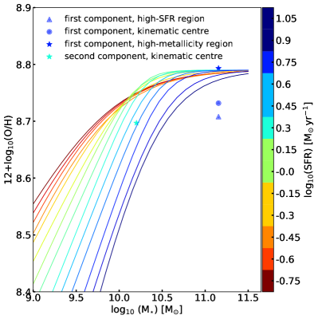
5 مناقشة
5.1 دمج ما قبل التحام
نحدد J221024.49+114247.0 كنظام دمج قيد التنفيذ. نلاحظ وجود قرصين متميزين يدوران بشكل معاكس، محاذيين على طول خط البصر، مع اختلاف في سرعة خط البصر قدره . نجد مجرة رئيسية واحدة ذات ميل ومجرة ثانية كنظيرة أصغر. باستخدام التصوير عالي الدقة من بصمة Megacam-CFHT، حددنا شريطًا غباريًا يتماشى مع المكون النجمي للمجرة الأصغر ويرتبط بالانقراض المُقاس في المجرة الرئيسية، مما يشير إلى سيناريو حيث يتم وضع المجرة الصغيرة أمام المجرة الرئيسية على طول خط الرؤية، كما هو موضح في الشكل 11. تم الكشف عن هذين المكونين القرصيين في الغاز المتأين وفي الانبعاثات النجمية المستمرة، ولم يتم تدميرهما بعد عن طريق التفاعل. لقد قدرنا نسبة الكتلة 9:1 باستخدام الكتل النجمية والكتل الديناميكية. بالنسبة لكلتا المجرتين، نجد قممًا خارجة عن المركز في تشتت السرعة النجمية، مما يذكرنا بالتراكم المحتمل على القرص والبنية الخيطية الأساسية.
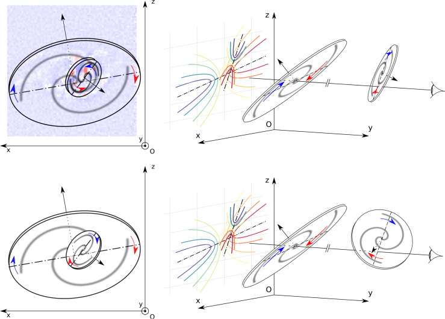
نعرض تمثيلات تخطيطية لتكوينين محتملين للكائنات المرصودة في الشكل 11: يُظهر كل صف من الشكل أحد هذه التكوينات، كما يتم عرضه على السماء (اللوحات اليسرى) أو بزاوية عرض (نفس الشيء بالنسبة للصفين) حيث يمكن تمثيل الأقراص بدون تراكب (اللوحات اليمنى، ”عروض 3D”). خط الرؤية الذي يتم ملاحظة النظام من خلاله بـ MaNGA يكون موازيًا لمحور (Oy) (يرمز للمراقب MaNGA بالعين الموجودة على اليمين). يمثل القرص الموجود على يسار مشهد 3D المجرة الأساسية، والمجرة الموجودة على اليمين، المجرة الثانوية. يظهر دوران كل قرص بتدوير (السهم الأسود) والأذرع الحلزونية الخلفية التخطيطية المقابلة. تمثل الأسهم الملونة سرعة خط البصر لمراقب MaNGA (منزاح إلى اللون الأزرق أو الأحمر بالنسبة لكل مركز حركي)، ويتم تمثيل خرائط السرعة MaNGA بشكل تخطيطي على مستوى (Oxz) من اللوحات اليمنى (بألوان مختلفة تتوافق مع كل مركز حركي، كما في الشكل 3). ونلاحظ أن المسافة بين المجرتين غير معروفة (وبالتالي الانقطاع في خط البصر). بالنسبة لميل قرص معين، يكون جزء من جانب واحد من المحور الرئيسي لإسقاط القرص في السماء إما أبعد من هذا المحور الرئيسي أو أقرب إليه (الجانب القريب). يمكننا تحديد الجانب القريب من المجرة الأولية بمساعدة أذرعها الحلزونية، كما هو موضح في الشكل 5. لقد افترضنا أن هذه الأذرع الحلزونية متأخرة، مما يعطي إحساسًا بالدوران في السماء. بالاشتراك مع سرعات خط البصر، يحدد هذا ميل مستوى القرص، مع وجود جانب قريب شمال شرق المحور الرئيسي. من الصعب تحديد الجانب القريب من المجرة الثانوية. إن وجود ممر الغبار الموازي للمحور الحركي ولكنه تحول إلى الشمال يمكن أن يدعم الحجة القائلة بأن الجانب القريب يقع على الجانب الشمالي، كما هو الحال في اللوحة العلوية من الشكل 11. وبدلاً من ذلك، تُظهر اللوحة السفلية تكوينًا متوافقًا مع رصد مخروط التأين شمال شرق المحور الرئيسي للقرص الثانوي، مما يعني أن الجانب القريب يقع على الجانب الجنوبي من المحور الرئيسي.
5.2 تدفقات خارجة محتملة مدفوعة بالنشاط المركزي
ربما أدى التفاعل أيضًا إلى تراكم الغاز في الثقب الأسود الهائل (SMBH) والثقب الأسود المخفي AGN الذي تم اكتشافه في الراديو. يتوافق هذا مع المناقشة الواردة في Shah et al. (2020) فيما يتعلق بإمكانية تحسين AGN على مستوى منخفض في تفاعلات المجرات. باستخدام الرسوم البيانية BPT، نجد أن المجرتين تقعان في مناطق مختلفة، مرتبطة بحالات تأين مختلفة. من ناحية، يشغل تشكل النجوم والإثارة المركبة مناطق مختلفة، ربما بسبب اختلاف كتل المجرات، بينما تظهر المجرة الثانية بعض المناطق مع إثارة LINER، مما يشير إلى آلية مختلفة من المحتمل أن تكون مرتبطة بالتدفق الراديوي الذي وجد أنه مرتبط بهذه المجرة. قد يشير هذا إلى أن عملية الدمج يمكن أن تحفز آليات مختلفة، مما يؤدي إلى تحويل المكونين على الرسم التخطيطي BPT، كما تمت مناقشته في Maschmann and Melchior (2019).
تُظهر أطياف الغاز الجزيئي التي تم الحصول عليها لكلتا المجرتين نطاقًا كبيرًا من السرعات يبلغ نحو . وبمقارنة هذه الأطياف بخطي الانبعاث H و[OIII] المكدسين من الأطياف الضوئية في الشكل 12، نلاحظ أن الأجنحة العريضة لانبعاث CO تتزامن مع الأجنحة المرصودة في الغاز المتأين. وهذا يفسر أنماط دوران القرصين. وبالتوازي، نرصد، في مجال السرعات -100-0 ، فائضًا نسبيًا في الغاز الجزيئي يتوافق مع ذروة نشاط تشكل النجوم. ولفهم سلوك الغاز الجزيئي قرب AGN المحتمل المحدد راديويًا، هناك حاجة إلى أرصاد أعلى دقة للغاز الجزيئي باستخدام مصفوفة المليمتر الممتدة الشمالية (NOEMA).
و[OIII] المكدسين من الأطياف الضوئية في الشكل 12، نلاحظ أن الأجنحة العريضة لانبعاث CO تتزامن مع الأجنحة المرصودة في الغاز المتأين. وهذا يفسر أنماط دوران القرصين. وبالتوازي، نرصد، في مجال السرعات -100-0 ، فائضًا نسبيًا في الغاز الجزيئي يتوافق مع ذروة نشاط تشكل النجوم. ولفهم سلوك الغاز الجزيئي قرب AGN المحتمل المحدد راديويًا، هناك حاجة إلى أرصاد أعلى دقة للغاز الجزيئي باستخدام مصفوفة المليمتر الممتدة الشمالية (NOEMA).
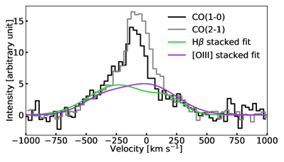
 و[OIII] المكدسين، التي تعرض مجالًا مشابهًا من السرعات.
و[OIII] المكدسين، التي تعرض مجالًا مشابهًا من السرعات.قد يتوافق النطاق الواسع من السرعات المكتشفة في كل من الغاز الجزيئي والمتأين مع التدفق الغازي، إما بسبب تشكل النجوم الناتج عن التفاعل أو بسبب ردود الفعل الناتجة عن AGN في المجرة الصغيرة. لقد ثبت أن النفاثات الراديوية، حتى عندما تكون مضغوطة، يمكن أن تخلق اضطرابًا كبيرًا في المجرات، مما يعزز عرض السرعة (Venturi et al. 2021). يوضح الشكل 9 أن الأجنحة العريضة لم يتم اكتشافها في الأطياف الفردية، ولكنها تظهر فقط عن طريق التراص. يجب أن ينتشر هذا الغاز المضطرب أو المتدفق على بعض المناطق المنتشرة وبكثافة منخفضة فقط.
5.3 دليل على وجود ممرين محيطيين
يُقدر إجمالي SFR للنظام بأكمله بـ (Salim et al. 2016).
تشير الملاحظات الراديوية إلى SFR أعلى بكثير من ، والذي ربما يكون متحيزًا بمساهمة AGN المحجوبة.
باستخدام خط الانبعاث H المصحح للانقراض، حددنا موقع تركيز التكوين النجمي المستمر في المجرة الرئيسية، والتي تكون بعيدة عن المركز بالنسبة إلى المركز الحركي بحوالي 5 kpc في الإسقاط.
تُظهر المجرة الأصغر ذروة قوية في تشكل النجوم، وتقع في مركزها الحركي، وترتبط بانبعاث راديوي ممتد.
المصحح للانقراض، حددنا موقع تركيز التكوين النجمي المستمر في المجرة الرئيسية، والتي تكون بعيدة عن المركز بالنسبة إلى المركز الحركي بحوالي 5 kpc في الإسقاط.
تُظهر المجرة الأصغر ذروة قوية في تشكل النجوم، وتقع في مركزها الحركي، وترتبط بانبعاث راديوي ممتد.
يبدو أن الغاز الخارجي للمجرة الأصغر قد تم تجريده من قبل المجرة الرئيسية، والتي من المحتمل أنها قامت بتراكم هذا الغاز على قرصها. ومن ثم فمن المحتمل أن سلف المجرة الأصغر كان في الأصل أكثر كتلة. إن اشتعال AGN، المرتبط بطريقة ما بالغاز الموجود في الانفجار النجمي المركزي، يرجع إما إلى تراكم الغاز (من الأولي) أو إلى التوزيع المركزي الأصلي للغاز، وليس ضروريًا فيما يتعلق بالتحرش. نلاحظ أيضًا ذروة في معدنية الطور الغازي للمجرة الرئيسية الواقعة شرق منطقة تشكل النجوم الرئيسية. ترتبط هذه المنطقة ذات المعدنية العالية، والتي تقع على بعد أكثر من 6 kpc عن المركز الحركي، بخطوط امتصاص بالمر الهامة المطبوعة في طيف المجرة (انظر الشكل 14). يمكن لهذه الميزة تتبع أحداث الانفجار النجمي السابقة التي لا يزيد عمرها عن 1 Gyr (مثلًا Pawlik et al. 2018). في الواقع، هذا التوزيع المعدني غير المتماثل بشكل واضح ليس متوقعًا في نظام مريح. نحن نرى أن هذا يمكن أن يكون علامة مرور محيطية أولية، في حين أن التكوين النجمي الحالي (في الجزء الشمالي الغربي من المجرة الرئيسية) يمكن أن يكون مرتبطًا بمرور حضيضي حديث. يختلف تشكل النجوم الناتج عن تفاعل المجرات بشكل كبير (من حيث أعلى SFR، ومدة فترات SFR العالية، وتشكل النجوم المتكامل على مدة الاندماج) كدالة للمعلمات المدارية وميل أقراص الأسلاف (مثلًا Di Matteo et al. 2008). ومن ثم، فمن الصعب استنتاج هندسة التفاعل (الاتجاه التقدمي أو الرجعي لدوران المجرات) من تشكل النجوم المرصود.
5.4 المقارنة مع أنظمة الدمج الأخرى
يمكن مقارنة المجرات المتفاعلة المعروضة في هذا العمل بالنظام الأقل ضخامة Mrk 739، الذي يستضيف AGN (Tubín et al. 2021) المزدوج. في هذه الحالة، تم التعرف على اثنين من AGNs في الأشعة السينية (Koss et al. 2011). ومن المثير للاهتمام، في هذا المصدر، أن توزيع الغاز المتأين يبلغ ذروته بوضوح عند موضع الاثنين AGNs. يتركز الغاز في المركز، وهو ما يفسر اشتعال كل من AGNs. نظرًا لأن النظام أكثر مواجهة للفصل النووي المتوقع لـ 3.4 kpc، فليس من الواضح ما إذا كان هناك قرصان دواران متميزان، مثل تلك التي نلاحظها في J221024.49+114247.0. لاحظ المؤلفون أن الأسلاف كانت عبارة عن مجرة مكونة للنجوم ومجرة إهليلجية قديمة.
في حالتنا، تحتوي المجرة الرئيسية على SFR أكبر من المجرة المرافقة لها، ولكن من المحتمل أن يكون سبب ذلك تراكم الغاز المجرد. ومن المثير للاهتمام أن هذا الغاز لم يصل إلى مركز المجرة ولم يتمكن من تغذية SMBH. باستخدام محاكاة NGC 2623، أوضح Prieto et al. (2021) أن الممر الأول يمكن أن يؤدي إلى تكوين نجمي ممتد، كما لاحظنا هنا. ناقش He et al. (2020) المجرتين في Arp 240 بمسافة متوقعة تبلغ حوالي 40 kpc. يزعمون أن وقت الاستنفاد المنخفض (100 Myr) هو حجة للاندماج في مرحلة متأخرة. في حالة J221024.49+114247.0، فإن وقت النضوب العالمي (3.3 Gyr) هو نموذجي للمجرات العادية التي تشكل النجوم (مثلًا Saintonge et al. 2011).
6 استنتاجات
لقد قدمنا تحليلاً متعدد الأطوال الموجية للاندماج المسبق، J221024.49+114247.0، في . تم التعرف على هذه المجرة في الأصل بميزة الذروة المزدوجة في ألياف SDSS وتشكل الاندماج المعطل، وقد تم رصد هذه المجرة باستخدام MaNGA. لقد قمنا بتطوير إجراء مناسب يعتمد على وظيفة غاوسية مزدوجة وقمنا بتطبيقه في جميع أنحاء مجال الرؤية MaNGA. وقد تمكنا من تسليط الضوء على وجود قرصين يدوران بشكل معاكس على طول خط البصر في الغازات وكذلك في النجوم. الفرق في سرعتها النظامية هو 450 km s-1، وهي محاذية على طول خط الرؤية. تتيح لنا نمذجة النجم LOSVD استخلاص نسبة الكتلة النجمية بين المكون الرئيسي والثانوي للنجم ، بالاعتماد على تقديرات نسبة الكتلة إلى الضوء. تتوافق نسبة الكتلة المستندة إلى تقديرات الكتلة الديناميكية بشكل جيد مع تلك المستمدة من تحليل التوزيع النجمي.
تُظهر المجرة الرئيسية مناطق بعيدة عن المركز لتشكل النجوم. تُظهر منطقة كبيرة (عند من المركز الحركي) معدنية غازية كبيرة وخط امتصاص بالمر في أطياف المجرة، ربما يذكرنا بالانفجار النجمي القديم 1 Gyr، في حين أن SFR الحالي المكتشف في  بعيدًا عن المركز أيضًا فيما يتعلق بالمركز الحركي. نحن نقول أن هذا يرجع إلى ممرين مختلفين حول المركز. من المحتمل أن تكون هذه المجرة الأكثر ضخامة غنية بالغاز أكثر من رفيقتها، لكن الغاز لم ينهار في المركز. تُظهر المجرة الصغيرة فائضًا من التدفق الراديوي الممتد المتمركز حول مركزها الحركي فيما يتعلق بـ SFR المتوقع. يتوافق مركزها الحركي مع تشتت السرعة القياسية والتدرج المعدني. ونؤكد أنه تم تجريد غازها الخارجي. تتوافق سرعات الغاز الجزيئي الكبيرة مع سرعات دوران الغاز المتأين، ولا يمكننا استنتاج إمكانية التدفق إلى الخارج.
بعيدًا عن المركز أيضًا فيما يتعلق بالمركز الحركي. نحن نقول أن هذا يرجع إلى ممرين مختلفين حول المركز. من المحتمل أن تكون هذه المجرة الأكثر ضخامة غنية بالغاز أكثر من رفيقتها، لكن الغاز لم ينهار في المركز. تُظهر المجرة الصغيرة فائضًا من التدفق الراديوي الممتد المتمركز حول مركزها الحركي فيما يتعلق بـ SFR المتوقع. يتوافق مركزها الحركي مع تشتت السرعة القياسية والتدرج المعدني. ونؤكد أنه تم تجريد غازها الخارجي. تتوافق سرعات الغاز الجزيئي الكبيرة مع سرعات دوران الغاز المتأين، ولا يمكننا استنتاج إمكانية التدفق إلى الخارج.
نقترح توسيع هذا العمل باستخدام ملاحظات قياس التداخل NOEMA/IRAM من أجل دراسة توزيع الغاز الجزيئي والتوزيع المستمر دون المليمتر.
Acknowledgements.
نحن ممتنون للغاية لفريق IRAM-30m الذي دعمنا لهذه الملاحظات. تعترف IK بالدعم المقدم من المؤسسة العلمية الروسية بمنحة 19-12-00281 والمدرسة العلمية والتعليمية متعددة التخصصات بجامعة موسكو “أبحاث الفضاء الأساسية والتطبيقية”. نشكر الحكم المجهول على تعليقاته البناءة.تم توفير التمويل لمسح السماء الرقمي Sloan IV من قبل مؤسسة Alfred P. Sloan، ومكتب العلوم التابع لوزارة الطاقة U.S.، والمؤسسات المشاركة. يقر SDSS-IV الدعم والموارد من مركز الحوسبة عالية الأداء في جامعة يوتا. موقع الويب SDSS هو www.sdss.org. تتم إدارة SDSS-IV بواسطة اتحاد أبحاث الفيزياء الفلكية لـ المؤسسات المشاركة في تعاون SDSS بما في ذلك مجموعة المشاركة البرازيلية، معهد كارنيجي للعلوم، جامعة كارنيجي ميلون، مجموعة المشاركة التشيلية، مجموعة المشاركة الفرنسية، مركز هارفارد سميثسونيان للفيزياء الفلكية، معهد الفلكísica de Canarias، جامعة جونز هوبكنز، معهد كافلي للفيزياء والرياضيات في الكون (IPMU) / جامعة طوكيو، مجموعة المشاركة الكورية، مختبر لورانس بيركلي الوطني، Leibniz Institut für Astrophysik Potsdam (AIP), Max-Planck-Institut für Astronomie (MPIA Heidelberg), Max-Planck-Institut für Astrophysik (MPA Garching), Max-Planck-Institut für Extraterrestrische Physik (MPE), المراصد الفلكية الوطنية الصينية، جامعة ولاية نيو مكسيكو، جامعة نيويورك، وجامعة نوتردام، ملاحظةário Nacional / MCTI، جامعة ولاية أوهايو، Pennsylvania State University, Shanghai Astronomical Observatory, United Kingdom Participation Group, الجامعة الوطنية Autónoma de México، جامعة أريزونا، جامعة كولورادو بولدر، جامعة أكسفورد، جامعة بورتسموث، جامعة يوتا، جامعة فرجينيا، جامعة واشنطن، جامعة ويسكونسن، جامعة فاندربيلت، وجامعة ييل.
تتألف استطلاعات Legacy من ثلاثة مشاريع فردية ومتكاملة: استطلاع كاميرا الطاقة المظلمة Legacy (DECaLS؛ معرف الاقتراح #2014B-0404؛ الباحثان الرئيسيان: David Schlegel وArjun Dey)، مسح السماء في بكين-أريزونا (BASS؛ NOAO معرف العرض #2015A-0801؛ PIs: Zhou Xu وXiahui Fan)، ومسح Mayall z-band Legacy (MzLS؛ معرف العرض #2016A-0453؛ PI: Arjun Dey). تتضمن DECaLS وBASS وMzLS معًا البيانات التي تم الحصول عليها، على التوالي، في تلسكوب بلانكو، ومرصد سيرو تولولو للبلدان الأمريكية، وNSF’s NOIRLab؛ تلسكوب بوك، مرصد ستيوارد، جامعة أريزونا؛ وتلسكوب مايال، مرصد كيت بيك الوطني، NOIRLab. يتشرف مشروع Legacy Surveys بالسماح له بإجراء أبحاث فلكية على Iolkam Du’ag (Kitt Peak)، وهو جبل ذو أهمية خاصة لأمة Tohono O’odham.
استخدم هذا البحث مرافق مركز البيانات الفلكية الكندي الذي يديره المجلس الوطني للبحوث في كندا بدعم من وكالة الفضاء الكندية.
References
- A distance scale from the infrared magnitude/HI velocity-width relation. I. The calibration.. ApJ 237, pp. 655–665. External Links: Document, ADS entry Cited by: §4.1.1.
- The Fourteenth Data Release of the Sloan Digital Sky Survey: First Spectroscopic Data from the Extended Baryon Oscillation Spectroscopic Survey and from the Second Phase of the Apache Point Observatory Galactic Evolution Experiment. ApJS 235, pp. 42. External Links: 1707.09322, Document, ADS entry Cited by: §2.
- Active galactic nuclei and galaxy interactions. MNRAS 375 (3), pp. 1017–1024. External Links: Document, astro-ph/0701192, ADS entry Cited by: §1, §4.3.
- Galaxy interactions. II. High density environments. A&A 539, pp. A46. External Links: Document, 1111.2292, ADS entry Cited by: §1.
- Kinematic scaling relations of CALIFA galaxies: A dynamical mass proxy for galaxies across the Hubble sequence. MNRAS 479 (2), pp. 2133–2146. External Links: Document, 1806.09013, ADS entry Cited by: §4.7.2, §4.7.3.
- Classification parameters for the emission-line spectra of extragalactic objects. PASP 93, pp. 5–19. External Links: Document, ADS entry Cited by: Figure 7, §4.3.
- The VLA’s FIRST Survey. In Astronomical Data Analysis Software and Systems III, D. R. Crabtree, R. J. Hanisch, and J. Barnes (Eds.), Astronomical Society of the Pacific Conference Series, Vol. 61, pp. 165. External Links: ADS entry Cited by: §3.3.
- The physical properties of star-forming galaxies in the low-redshift Universe. MNRAS 351, pp. 1151–1179. External Links: astro-ph/0311060, Document, ADS entry Cited by: Table 1, §4.2.1.
- Overview of the SDSS-IV MaNGA Survey: Mapping nearby Galaxies at Apache Point Observatory. ApJ 798 (1), pp. 7. External Links: Document, 1412.1482, ADS entry Cited by: §1.
- The Dust Opacity of Star-forming Galaxies. PASP 113 (790), pp. 1449–1485. External Links: Document, astro-ph/0109035, ADS entry Cited by: §4.2.1.
- Improving the full spectrum fitting method: accurate convolution with Gauss-Hermite functions. MNRAS 466, pp. 798–811. External Links: 1607.08538, Document, ADS entry Cited by: §4.1.1.
- Structure and Kinematics of Early-Type Galaxies from Integral Field Spectroscopy. ARA&A 54, pp. 597–665. External Links: Document, 1602.04267, ADS entry Cited by: §1.
- Galaxy Zoo: quantifying morphological indicators of galaxy interaction. MNRAS 429 (2), pp. 1051–1065. External Links: Document, 1206.5020, ADS entry Cited by: §1.
- Kinematics and stellar populations of the dwarf elliptical galaxy IC 3653. MNRAS 376 (3), pp. 1033–1046. External Links: Document, astro-ph/0701842, ADS entry Cited by: §2.2.
- NBursts: Simultaneous Extraction of Internal Kinematics and Parametrized SFH from Integrated Light Spectra. In Stellar Populations as Building Blocks of Galaxies, A. Vazdekis and R. Peletier (Eds.), Vol. 241, pp. 175–176. External Links: Document, 0709.3047, ADS entry Cited by: §2.2.
- RCSED—A Value-added Reference Catalog of Spectral Energy Distributions of 800,299 Galaxies in 11 Ultraviolet, Optical, and Near-infrared Bands: Morphologies, Colors, Ionized Gas, and Stellar Population Properties. ApJS 228 (2), pp. 14. External Links: Document, 1612.02047, ADS entry Cited by: §2, Figure 8, §4.2.5.
- Radio Sources in the Nearby Universe. ApJ 872 (2), pp. 148. External Links: Document, 1901.10046, ADS entry Cited by: §3.3, §4.2.3.
- The SAMI Galaxy Survey: Toward a Unified Dynamical Scaling Relation for Galaxies of All Types. ApJ 795 (2), pp. L37. External Links: Document, 1410.3931, ADS entry Cited by: §4.7.2.
- The mass-metallicity and the fundamental metallicity relation revisited on a fully Te-based abundance scale for galaxies. MNRAS 491 (1), pp. 944–964. External Links: Document, 1910.00597, ADS entry Cited by: Figure 10, §4.3, §4.7.4.
- Green valley galaxies in the cosmic web: internal versus environmental quenching. arXiv e-prints, pp. arXiv:2101.02564. External Links: 2101.02564, ADS entry Cited by: §1.
- Overview of the DESI Legacy Imaging Surveys. AJ 157 (5), pp. 168. External Links: Document, 1804.08657, ADS entry Cited by: §2, Figure 5.
- On the frequency, intensity, and duration of starburst episodes triggered by galaxy interactions and mergers. A&A 492 (1), pp. 31–49. External Links: Document, 0809.2592, ADS entry Cited by: §5.3.
- Improving galaxy morphologies for SDSS with Deep Learning. MNRAS 476 (3), pp. 3661–3676. External Links: Document, 1711.05744, ADS entry Cited by: Table 1, Figure 8.
- Enhanced atomic gas fractions in recently merged galaxies: quenching is not a result of post-merger gas exhaustion. MNRAS 478 (3), pp. 3447–3466. External Links: Document, 1805.03604, ADS entry Cited by: §1.
- Galaxy pairs in the Sloan Digital Sky Survey - II. The effect of environment on interactions. MNRAS 407 (3), pp. 1514–1528. External Links: Document, 1002.4418, ADS entry Cited by: §1.
-
A definitive merger-AGN connection at z 0 with CFIS: mergers have an excess of AGN and AGN hosts are more frequently disturbed.
MNRAS 487 (2), pp. 2491–2504.
External Links: Document,
1905.08830,
ADS entry
Cited by: §1.
- PHIBSS2: survey design and z = 0.5 - 0.8 results. Molecular gas reservoirs during the winding-down of star formation. A&A 622, pp. A105. External Links: Document, 1812.08180, ADS entry Cited by: §3.1.
- Abundance diagnosis of E+A (post-starburst) galaxies. MNRAS 377 (3), pp. 1222–1228. External Links: Document, astro-ph/0703621, ADS entry Cited by: §4.6.
- An interferometric CO survey of luminous submillimetre galaxies. MNRAS 359 (3), pp. 1165–1183. External Links: Document, astro-ph/0503055, ADS entry Cited by: §1.
- Stellar populations and physical properties of starbursts in the antennae galaxy from self-consistent modelling of MUSE spectra. MNRAS 497 (3), pp. 3860–3895. External Links: Document, 1912.08151, ADS entry Cited by: §4.6.
- MegaPipe: The MegaCam Image Stacking Pipeline at the Canadian Astronomical Data Centre. PASP 120 (864), pp. 212. External Links: Document, 0710.0370, ADS entry Cited by: §3.2.
- Interacting galaxies in the IllustrisTNG simulations - II: star formation in the post-merger stage. MNRAS 493 (3), pp. 3716–3731. External Links: Document, 2001.04472, ADS entry Cited by: §1.
- Is this an early stage merger? A case study on molecular gas and star formation properties of Arp 240. MNRAS 496 (4), pp. 5243–5261. External Links: Document, 2006.12523, ADS entry Cited by: §5.4.
- The Last of FIRST: The Final Catalog and Source Identifications. ApJ 801 (1), pp. 26. External Links: Document, 1501.01555, ADS entry Cited by: §3.3.
- Extragalactic nebulae.. ApJ 64, pp. 321–369. External Links: Document, ADS entry Cited by: §4.1.1.
- An excessively massive thick disc of the enormous edge-on lenticular galaxy NGC 7572. MNRAS 493 (4), pp. 5464–5478. External Links: Document, 1912.04887, ADS entry Cited by: §2.2.
- Lenticular Galaxy IC 719: Current Building of the Counterrotating Large-scale Stellar Disk. ApJ 769 (2), pp. 105. External Links: Document, 1304.3339, ADS entry Cited by: §2.2.
- Stellar counter-rotation in lenticular galaxy NGC 448. MNRAS 461 (2), pp. 2068–2076. External Links: Document, 1606.04862, ADS entry Cited by: §2.2.
- The host galaxies of active galactic nuclei. MNRAS 346 (4), pp. 1055–1077. External Links: Document, astro-ph/0304239, ADS entry Cited by: Figure 7.
- Theoretical Modeling of Starburst Galaxies. ApJ 556 (1), pp. 121–140. External Links: Document, astro-ph/0106324, ADS entry Cited by: Figure 7.
- Understanding Galaxy Evolution Through Emission Lines. ARA&A 57, pp. 511–570. External Links: Document, 1910.09730, ADS entry Cited by: §4.3.
- Chandra Discovery of a Binary Active Galactic Nucleus in Mrk 739. ApJ 735 (2), pp. L42. External Links: Document, 1106.2163, ADS entry Cited by: §5.4.
- Kinemetry: a generalization of photometry to the higher moments of the line-of-sight velocity distribution. MNRAS 366 (3), pp. 787–802. External Links: Document, astro-ph/0512200, ADS entry Cited by: §4.1.1.
- The Karl G. Jansky Very Large Array Sky Survey (VLASS). Science Case and Survey Design. PASP 132 (1009), pp. 035001. External Links: Document, 1907.01981, ADS entry Cited by: §3.3.
- The fate of the Antennae galaxies. MNRAS 475 (3), pp. 3934–3958. External Links: Document, 1709.00010, ADS entry Cited by: §1.
- A fundamental relation between mass, star formation rate and metallicity in local and high-redshift galaxies. MNRAS 408 (4), pp. 2115–2127. External Links: Document, 1005.0006, ADS entry Cited by: §4.7.4.
- Double-peak emission line galaxies in the SDSS catalogue. A minor merger sequence. A&A 641, pp. A171. External Links: Document, 2007.14410, ADS entry Cited by: §2.
-
Ultimate merging at z 0.1.
A&A 627, pp. L3.
External Links: Document,
1906.05629,
ADS entry
Cited by: §5.2.
- Galaxy mergers in EAGLE do not induce a significant amount of black hole growth yet do increase the rate of luminous AGN. MNRAS 494 (4), pp. 5713–5733. External Links: Document, 2002.00959, ADS entry Cited by: §1.
- A second course in statistics: regression analysis. Pearson Education. External Links: ISBN 9780321831453, Link Cited by: §2.1.
- Interacting galaxies: corotating and counter-rotating systems with tidal tails. MNRAS 438 (2), pp. 1784–1793. External Links: Document, 1312.0560, ADS entry Cited by: §1.
- Accurate Identification of Galaxy Mergers with Imaging. ApJ 872 (1), pp. 76. External Links: Document, 1901.01975, ADS entry Cited by: §1.
- Astrophysics of gaseous nebulae and active galactic nuclei. External Links: ADS entry Cited by: §4.2.1.
- Galaxy pairs in the Sloan Digital Sky Survey - VI. The orbital extent of enhanced star formation in interacting galaxies. MNRAS 433 (1), pp. L59–L63. External Links: Document, 1305.1595, ADS entry Cited by: §1.
- The origins of post-starburst galaxies at z ¡ 0.05. MNRAS 477 (2), pp. 1708–1743. External Links: Document, 1803.02201, ADS entry Cited by: §4.6, §5.3.
- Optical Spectral Signatures of Dusty Starburst Galaxies. ApJ 529 (1), pp. 157–169. External Links: Document, astro-ph/9908180, ADS entry Cited by: §4.6.
- Black hole fueling in galaxy mergers: A high-resolution analysis. arXiv e-prints, pp. arXiv:2101.09407. External Links: 2101.09407, ADS entry Cited by: §5.4.
- COLD GASS, an IRAM legacy survey of molecular gas in massive galaxies - II. The non-universality of the molecular gas depletion time-scale. MNRAS 415 (1), pp. 61–76. External Links: Document, 1104.0019, ADS entry Cited by: §5.4.
- An Infrared-luminous Merger with Two Bipolar Molecular Outflows: ALMA and SMA Observations of NGC 3256. ApJ 797 (2), pp. 90. External Links: Document, 1403.7117, ADS entry Cited by: §1.
- GALEX-SDSS-WISE Legacy Catalog (GSWLC): Star Formation Rates, Stellar Masses, and Dust Attenuations of 700,000 Low-redshift Galaxies. ApJS 227 (1), pp. 2. External Links: Document, 1610.00712, ADS entry Cited by: Table 1, Figure 10, Figure 8, §4.2.1, §4.2.2, §4.7.1, §5.3.
- Observational evidence for AGN feedback in early-type galaxies. MNRAS 382 (4), pp. 1415–1431. External Links: Document, 0709.3015, ADS entry Cited by: Figure 7.
- Investigating the Effect of Galaxy Interactions on the Enhancement of Active Galactic Nuclei at 0.5 ¡ z ¡ 3.0. ApJ 904 (2), pp. 107. External Links: Document, 2010.02710, ADS entry Cited by: §1, §5.2.
- The Connection between Mergers and AGN Activity in Simulated and Observed Massive Galaxies. arXiv e-prints, pp. arXiv:2101.01729. External Links: 2101.01729, ADS entry Cited by: §1.
- The Molecular Interstellar Medium in Ultraluminous Infrared Galaxies. ApJ 478 (1), pp. 144–161. External Links: Document, astro-ph/9610166, ADS entry Cited by: §3.1.
- Physical Models of Galaxy Formation in a Cosmological Framework. ARA&A 53, pp. 51–113. External Links: Document, 1412.2712, ADS entry Cited by: §1.
- Spectroscopic Target Selection in the Sloan Digital Sky Survey: The Main Galaxy Sample. AJ 124 (3), pp. 1810–1824. External Links: Document, astro-ph/0206225, ADS entry Cited by: §1.
- The Complex Gaseous and Stellar Environments of the Nearby Dual Active Galactic Nucleus Mrk 739. ApJ 911 (2), pp. 100. External Links: Document, 2103.12180, ADS entry Cited by: §5.4.
- Forming Compact Massive Galaxies. ApJ 813 (1), pp. 23. External Links: Document, 1506.03085, ADS entry Cited by: §1.
- MAGNUM survey: Compact jets causing large turmoil in galaxies. Enhanced line widths perpendicular to radio jets as tracers of jet-ISM interaction. A&A 648, pp. A17. External Links: Document, 2011.04677, ADS entry Cited by: §5.2.
- Multiple CO lines in SMM J16359+6612 - further evidence for a merger. A&A 440 (2), pp. L45–L49. External Links: Document, astro-ph/0508037, ADS entry Cited by: §1.
- The Data Analysis Pipeline for the SDSS-IV MaNGA IFU Galaxy Survey: Overview. AJ 158 (6), pp. 231. External Links: Document, 1901.00856, ADS entry Cited by: §2.
Appendix A الخصائص المكانية للغاز التي تم الحصول عليها من خلال إجراء التركيب الخاص بنا
A.1 خرائط التدفق
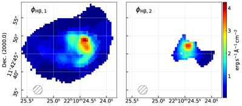
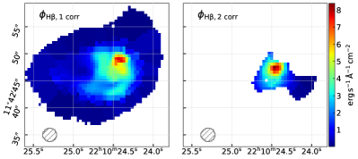
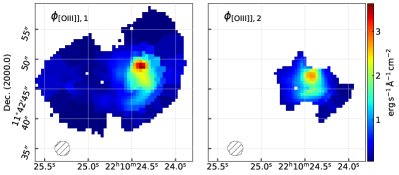
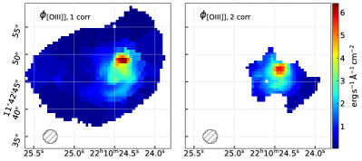
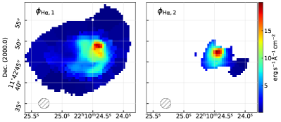
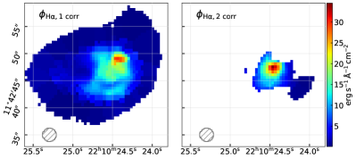
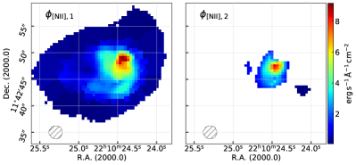
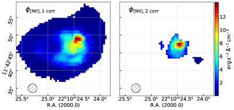
 و[OIII]
و[OIII] 5007 و
5007 و و[NII]
و[NII] 6585 لكلا المكونين الملاءمين. عتبة S/N مضبوطة عند 3 (وتُحجب السباكسلات ذات S/N الأدنى من هذه القيمة). علاوة على ذلك، بالنسبة إلى المكون الثاني، تُحجب جميع السباكسلات التي لا تستوفي المعايير المحددة في القسم 2.1. الخرائط المعروضة في العمود الأيمن هي التدفقات نفسها بعد تصحيحها للانقراض.
6585 لكلا المكونين الملاءمين. عتبة S/N مضبوطة عند 3 (وتُحجب السباكسلات ذات S/N الأدنى من هذه القيمة). علاوة على ذلك، بالنسبة إلى المكون الثاني، تُحجب جميع السباكسلات التي لا تستوفي المعايير المحددة في القسم 2.1. الخرائط المعروضة في العمود الأيمن هي التدفقات نفسها بعد تصحيحها للانقراض.Appendix B أطياف من مناطق ذات معادن مختلفة للغاية
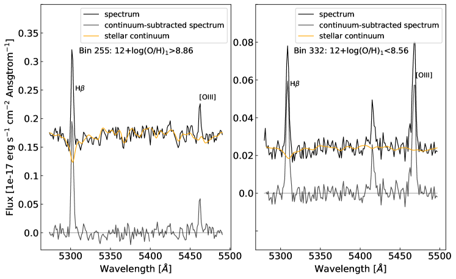
 .
.